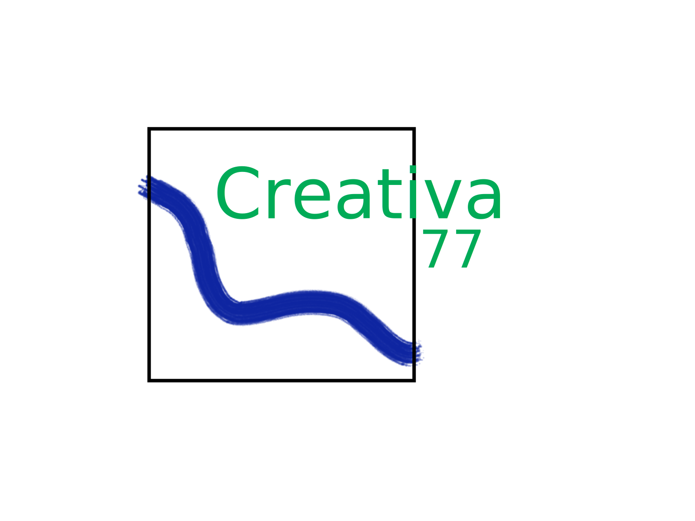

 CREATIVA 77


Projects
We contributed with our expertise on system integration for bringing some of the existing modules and projects into the services market. We defined the system architecture and adapted the development infrastructure from an open source research project to a private product development business.
At the UX level we created intuitive web interfaces for complex robotics problems using Ember.js, Web Sockets and the Robot Web Tools bundle. We also tackle the problem of non-expert users controlling robots under continuous operation and end-user robot programming.
At the backend level we worked throughout the whole ROS stack using C++ and Python to implement multiple robot networks (each one with its own master node) and extended the python client API. We also performed kinematics analysis on different client environments using MoveIt!.